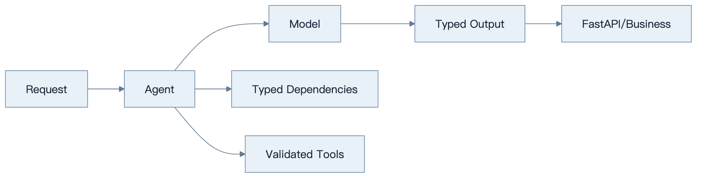
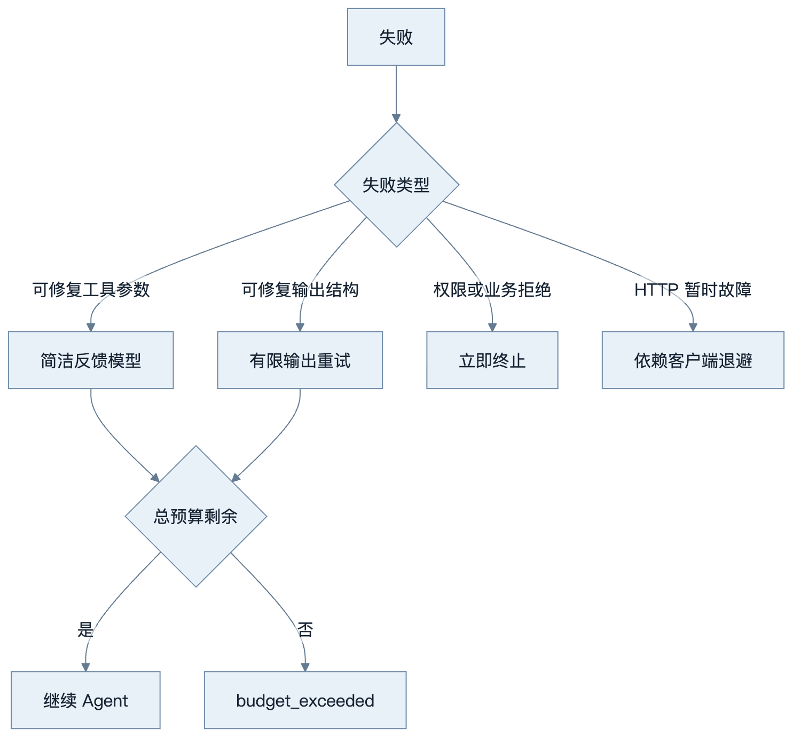
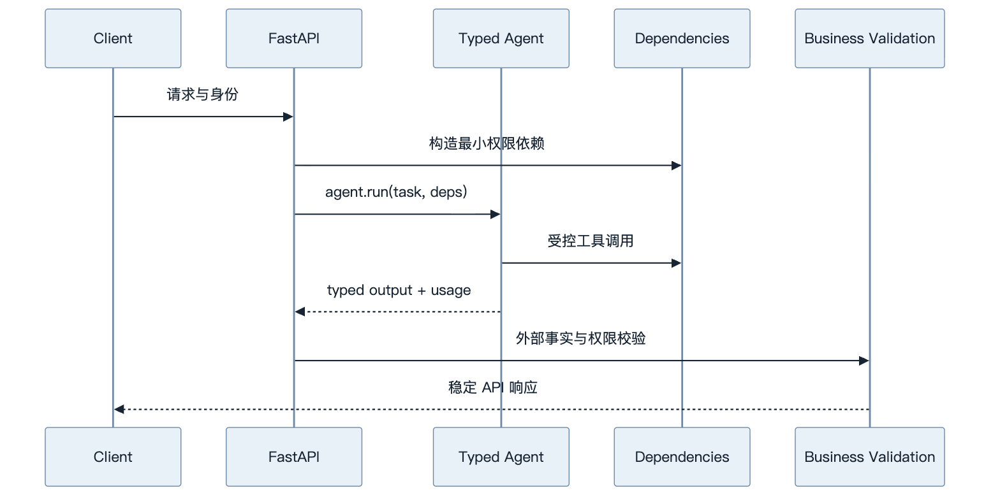
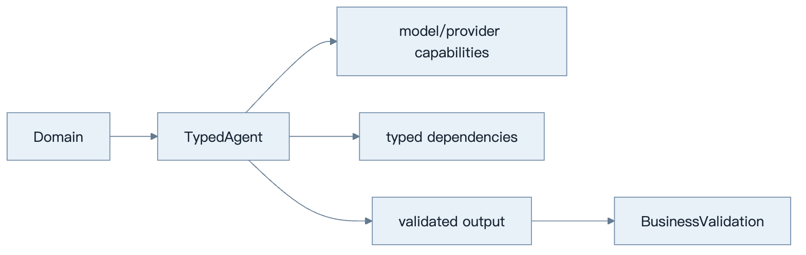

第19章：PydanticAI
最后核对日期：2026-08-07；本章核心代码已按官方 Dependencies、Tools、Output 与 Testing 文档和隔离安装的 pydantic-ai-slim==2.25.0 复验。
导读、目标与前置知识
PydanticAI 强调类型安全、依赖注入、验证和模型抽象。本章目标是判断它在 Python 业务服务中的价值。前置知识为 Pydantic、async/await 与第17章。
学习目标是实现类型化工具与输出，并在无在线模型的测试中验证控制边界。
核心原理与架构
Agent 的依赖对象承载数据库、身份和服务客户端；Tool 通过类型注解生成 Schema；输出模型形成验证边界；失败可在有限范围内反馈模型重试。模型抽象便于测试和供应商替换，但不同模型能力仍不完全等价。
下面的组件图把类型化依赖、工具参数和输出契约放在同一请求链路中，突出框架类型边界与业务授权边界并不相同。

类型将模型输出与 Python 业务代码连接起来，但依赖权限和外部事实仍由领域服务负责。

每一层独立重试会造成乘法放大，因此模型、工具和网络重试必须共享一次运行的总预算。

框架对象应停留在应用适配层，领域模型和 API 契约不直接依赖 PydanticAI 内部类型。
最小与完整工程
最小案例抽取工单为 Pydantic 模型。工程版把用户身份、数据库会话和只读服务注入依赖，测试使用框架提供的测试模型或 Fake，验证工具选择、输出与重试。具体构造器和结果属性不凭记忆书写。
误区、调试、实践与安全
类型安全不等于事实正确；依赖注入不应把管理员客户端交给所有工具；模型抽象不能抹平供应商差异。调试同时查看验证错误和原始模型事件。生产固定版本并建立回归集。
总结、练习、面试与阅读
类型安全与 Dependency Injection
PydanticAI 的核心是让 Agent 对依赖类型和输出类型参数化。Dependencies 承载当前 run 需要的数据库客户端、主体、配置与领域服务，通过 RunContext 提供给动态 instructions 和 tools。它避免全局变量并提高测试替换能力，但不会自动限制依赖权限；传入管理员数据库连接，工具仍可能越权。
from dataclasses import dataclass
from pydantic import BaseModel, Field
from pydantic_ai import Agent, RunContext
@dataclass
class SupportDeps:
customer_id: int
repository: "CustomerRepository"
class SupportOutput(BaseModel):
answer: str
risk: int = Field(ge=0, le=10)
agent = Agent(
"openai:gpt-5.2",
deps_type=SupportDeps,
output_type=SupportOutput,
instructions="Use tools for account facts; do not guess.",
)
@agent.tool
async def account_status(ctx: RunContext[SupportDeps]) -> str:
return await ctx.deps.repository.status(ctx.deps.customer_id)
示例形态按 2026-08-07 官方文档和隔离安装版本核对；模型名称与依赖版本在真实项目中通过配置固定。CustomerRepository 应只暴露当前客户可用操作，而不是通用 SQL。
Tool、Output 与 Validation
函数参数成为工具 Schema，docstring 进入工具描述。工具遇到可由模型修正的输入可抛出框架支持的 retry 信号；权限拒绝和业务拒绝不应伪装成 retry。输出通过 output_type 约束，验证失败会消耗有限重试预算。类型正确仍不保证事实正确，外部 ID 和业务不变量继续校验。
动态 instructions 可以根据依赖加入客户名或租户上下文，但不能把完整敏感对象转成 Prompt。模型只能看到函数显式返回的数据，依赖对象本身保留在运行时。
Model Abstraction 与供应商差异
框架统一模型接口，有利于测试和切换，但 Tool Calling、Structured Output、Thinking、原生工具、Usage 和流式事件并不完全等价。应用定义能力需求并运行 provider contract tests，而不是假设换一个 model string 行为不变。Fallback 也要考虑数据驻留和成本策略。

统一接口只减少接线代码，不能抹平 Tool Calling、Structured Output、Usage 和流式事件的供应商差异。
Retry 与错误边界
工具重试与输出重试有各自预算。输入可修复错误给模型简洁反馈；HTTP 暂时故障由客户端退避；Policy 拒绝立即终止。运行总预算同时限制模型回合、工具次数、Token 和时间，防止每层独立重试造成乘法放大。
异常映射到领域错误，例如 invalid_output、dependency_unavailable、policy_denied 和 budget_exceeded。FastAPI 层返回稳定响应，框架异常栈不暴露给用户。
Testing 与 Evaluation
官方推荐用 TestModel 或 FunctionModel 替代真实模型，并可用 Agent.override 替换模型、依赖或 toolset。测试进程设置 ALLOW_MODEL_REQUESTS=False，防止单元测试意外产生在线费用。TestModel 根据 Schema 生成程序化数据，适合遍历工具与类型；需要精确工具参数时使用 FunctionModel。
from pydantic_ai import models
from pydantic_ai.models.test import TestModel
models.ALLOW_MODEL_REQUESTS = False
async def test_support_agent(deps: SupportDeps) -> None:
with agent.override(model=TestModel()):
result = await agent.run("Check my account", deps=deps)
assert isinstance(result.output, SupportOutput)
测试还要直接覆盖 Repository 权限、工具错误、输出业务规则和 FastAPI 协议。黄金评估集再使用真实模型测任务质量；单元测试通过不能替代模型评估。
FastAPI 集成与完整工程
FastAPI dependency 构造当前主体与 Repository，路由调用异步 agent.run，结果转换为 API response。每个请求设置 timeout、run ID 和 Usage，流式响应传递结构化事件。长任务进入队列，不能占用 Web Worker 等待人工审批。
工程目录把 agent.py、deps.py、tools.py、schemas.py、service.py 和 api.py 分开。PydanticAI 对象留在应用适配层，领域模型不依赖框架。Observability 可使用 OpenTelemetry/Logfire 集成，但敏感属性仍由应用筛选。
常见误区、调试与安全
常见误区是把类型安全等同于事实安全、把依赖注入当权限系统、让所有验证错误无限反馈模型。调试查看模型消息、工具调用、validation error 与 Usage，并区分框架、供应商和领域错误。安全上依赖最小权限、工具验证主体、输出再鉴权、测试禁止真实模型请求。
总结：PydanticAI 擅长把类型、依赖、工具和输出放进 Python 工程边界，但复杂持久工作流仍需图或 durable engine。练习：为 FastAPI 工单服务设计依赖类型并用 TestModel 测试。面试：输出校验和业务校验如何分层？何时 PydanticAI 比图工作流更合适？TestModel 与 FunctionModel 如何选择？延伸阅读：Dependencies、Tools、Output与Testing。本章对应代码目录为 examples/pydanticai_service/，包含固定依赖、离线入口、FastAPI 集成以及成功与失败路径测试。
本章引用
以下资料用于支撑本章的核心原理、工程边界与版本敏感说明：